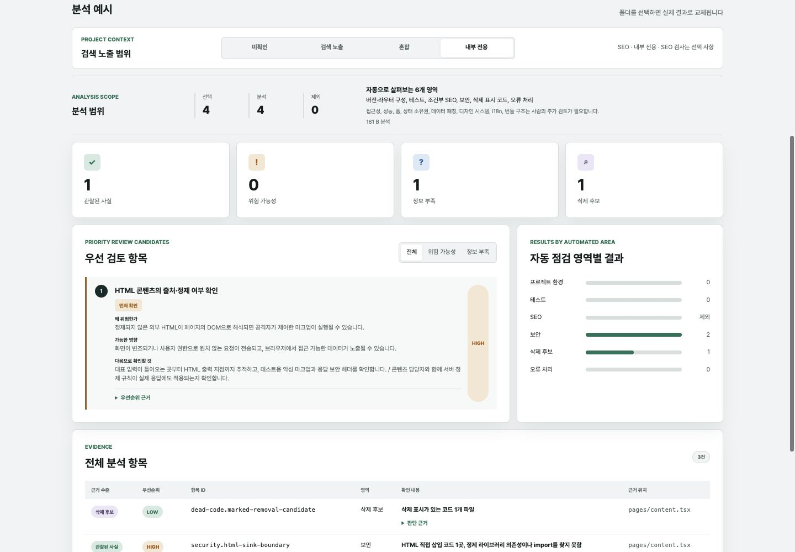

Frontend Agent Playbook
흩어진 좋은 규칙을
프로젝트에 맞는 실행으로
React, Next.js, TypeScript의 공식 가이드를 코드베이스의 버전·구조·위험에 맞게 골라 쓰고, 근거를 확인한 뒤 사람의 승인을 받아 유지·개선·후속 작업 제안으로 연결하는 플레이북입니다.
공식 가이드 → 프로젝트 맥락
유지 · 개선 · 제안
근거 확인 → 승인 → 검증
01 · Problem
좋은 가이드는 많았지만, 실제 프로젝트에 적용하는 과정은 흩어져 있었습니다
AI는 기존 코드와 관례를 참고합니다. 나쁜 패턴이 쌓일수록 그 패턴을 정상적인 방식으로 받아들여 반복할 가능성도 커집니다.
공식 근거를 모으는 데서 끝나지 않고, 현재 코드를 지키고 개선하며 당장 해결하지 못한 위험은 다음 작업으로 남기는 공통 흐름이 필요했습니다.
01
근거와 적용 조건이 분산React, Next.js, TypeScript의 가이드는 좋지만 버전·Router·공개 범위에 따라 무엇을 적용할지는 다시 판단해야 합니다.
02
나쁜 코드가 다음 기준이 됨임시 처리와 일관성 없는 구조가 누적되면 AI도 이를 기존 관례로 받아들여 같은 문제를 반복할 수 있습니다.
03
발견이 다음 행동으로 이어지지 않음지금 고칠 문제, 유지할 좋은 패턴, 범위 밖이라 이슈로 제안할 문제를 구분하지 않으면 우선순위가 사람에게 그대로 남습니다.
02 · Workflow
규칙·스킬·분석기를 하나의 실행 흐름으로 묶었습니다
지킬지공식 가이드와 프로젝트 예외를 판단 기준으로 정리
적용할지코드 탐색부터 제안·승인·적용까지 반복 가능한 절차
살펴볼지검토 후보와 근거 수준, 아직 확인하지 못한 정보를 정리
연결할지프로젝트 맥락부터 검증과 결정 기록까지 하나로 연결
유지 · 이미 좋은 패턴은 훼손하지 않도록 지킴
개선 · 현재 작업 범위에서 검증 가능한 만큼 개선
제안 · 범위 밖 위험은 근거와 완료 기준을 갖춘 초안으로 남김
03 · Demo
분석 결과를 검토와 다음 조치로 연결합니다
검색 노출 범위
미확인검색 노출혼합내부 전용
SEO 검사는 선택 사항

01
프로젝트 맥락 확인버전, Router, 공개 범위와 기존 도구를 먼저 읽습니다.
02
분석 항목의 실제 영향 검토관찰된 사실, 위험 가능성, 정보 부족, 삭제 후보를 구분하고 왜 위험할 수 있는지와 다음 확인 방법을 함께 표시합니다.
03
Markdown 검토 보고서 생성항목 ID와 근거를 코드베이스 점검 스킬에 전달합니다.
04
다음 조치 제안점검 스킬이 유지·개선·이슈 초안을 제안하며, 수정과 이슈 등록은 각각 승인을 받습니다.
04 · Boundaries
자동화는 검토 대상을 찾고, 최종 결정은 사람이 내립니다
먼저 살펴볼 항목
- 버전과 Router 구성
- HTML 콘텐츠의 출처·정제 여부와 테스트 공백
- 근거가 충분한지와 먼저 볼 순서
- 민감 정보가 제거된 검토 보고서
사람이 확인
- 입력 데이터의 실제 출처와 신뢰 경계
- 사용자·비즈니스에 미치는 실제 영향
- 기존 방어 로직과 예외가 타당한지
- 유지·즉시 개선·후속 제안 중 처리 방향
- 수정과 이슈 등록의 우선순위·시점
자동으로 결정하지 않음
- 정적 패턴만으로 취약점 확정
- 삭제 후보의 자동 제거
- 점수를 품질 보증이나 배포 승인에 사용
- 승인 없는 규칙 적용·파일 수정·이슈 등록
현재 상태: 안정 버전은 v0.1.1이며 분석기 v0.2의 첫 구현은 main에서 검증 중입니다. 정적 패턴 검사이므로 실제로 도움이 된 지적과 오탐의 비율은 아직 충분히 측정하지 못했습니다.
05 · Next
다음 단계는 규칙 추가보다 실전 검증입니다
실제 프로젝트 2~3곳에서 검증Pages Router, App Router, 혼합 구조에서도 같은 기준으로 판단하는지 확인
도움이 된 지적과 오탐 측정분석 항목이 유지·수정·이슈·제외 중 어디로 이어졌는지 기록
기준선과 변경 비교를 분석 UI에 연결새로 생김·악화됨·기존·확인 불가를 구분해 반복 분석의 노이즈를 줄임
Next.js 분석 정확도 높이기페이지별 메타데이터와 제한된 데이터 흐름부터 파서 기반 분석의 정확도를 검증
좋은 코드베이스를 지키고, 지금 개선하며,
당장 해결할 수 없는 위험은 근거 있는 다음 작업으로 남깁니다.